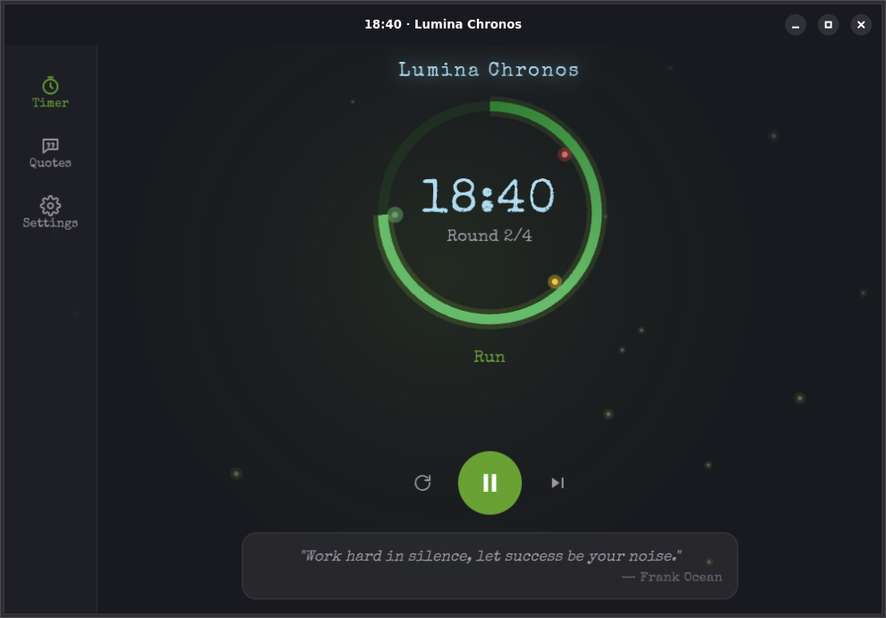
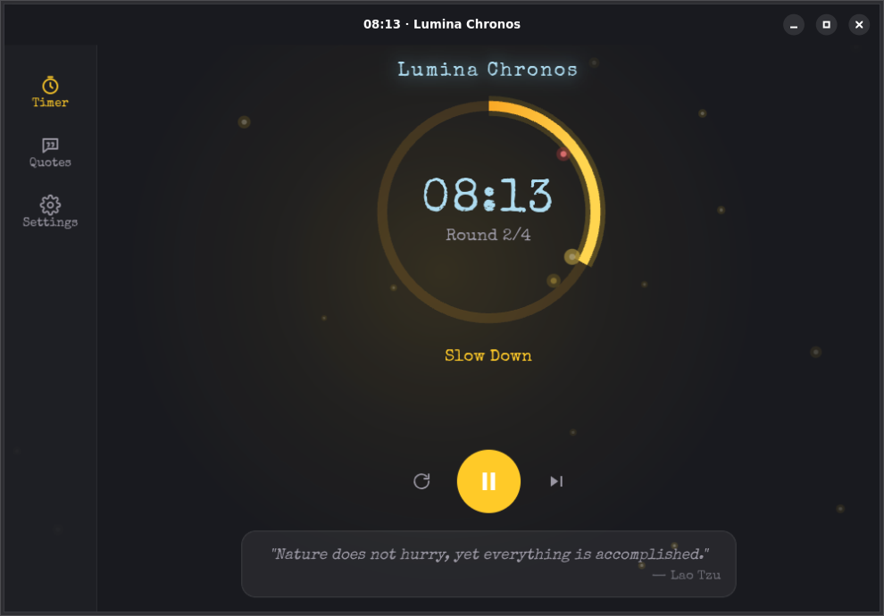
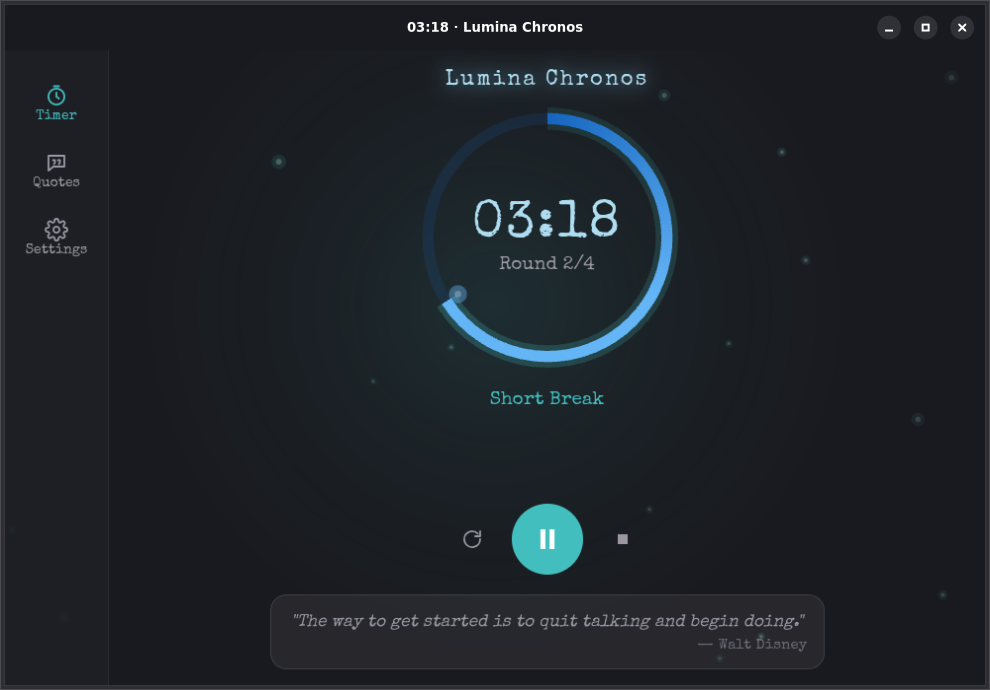
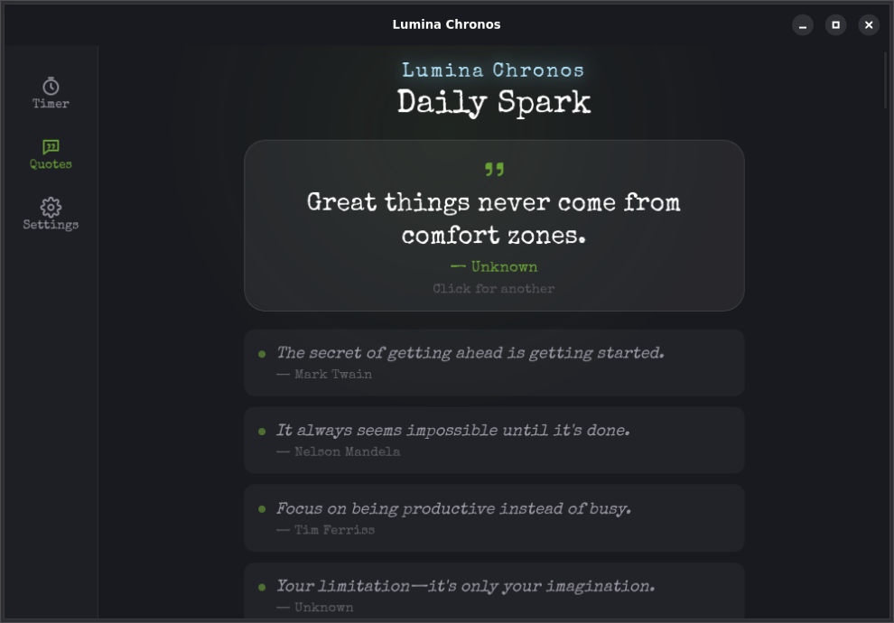
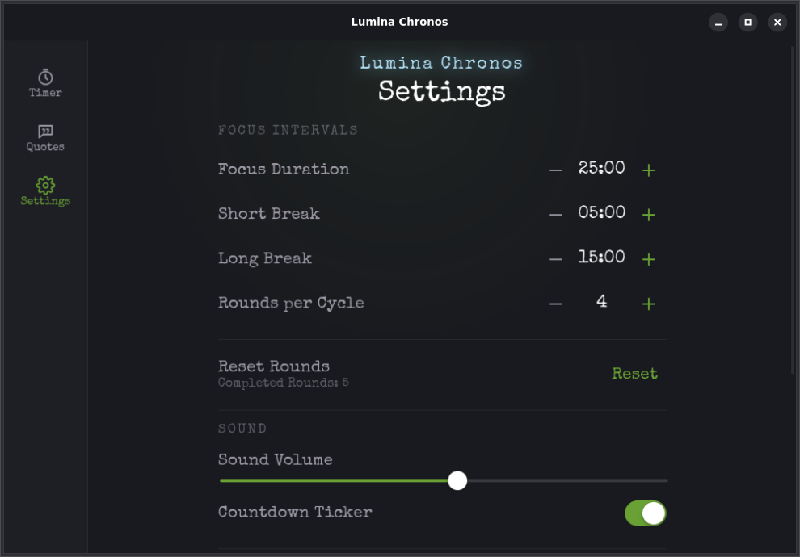

Lumina Chronos
A free, focused Pomodoro timer for the Linux desktop. No ads, no accounts.
What it does
- Color-band progress ring — green flow, yellow Slow Down, red Finish.
- Final-5-second audible ticks so you can finish a thought without staring at the screen.
- Desktop notification when a session ends; click it to bring the timer back.
- Daily Spark — built-in focus quotes between sessions.
- Pause on minimize, keep the screen on, full screen (F11), configurable durations, rounds and volume.
- Available in 12 languages — English, Arabic, Bulgarian, Chinese (Simplified), German, Indonesian, Italian, Japanese, Portuguese, Russian, Spanish and Turkish, quotes included. It follows your desktop’s language.
Screenshots

Focus 
Slow Down 
Break 
Daily Spark 
Settings
Install
You need Flatpak, which most Linux desktops have already. If yours doesn’t, follow the Flatpak setup guide for your distribution. Then download the file above and install it:
flatpak install --user lumina-chronos-1.3.0.flatpakThe first install also downloads the GNOME runtime it runs on from Flathub (a few hundred MB, shared with other apps). Lumina Chronos then appears with your other apps, or start it with:
flatpak run uk.co.albenrisdev.LuminaChronosTo update, download the new version from this page and install it the same way; your settings are kept. To remove it: flatpak uninstall uk.co.albenrisdev.LuminaChronos.
SHA-256: 882116999311937b0433f128af58577fb074059bc8eb5821b86f2560b42e0046
Requirements
- A 64-bit (x86_64) Linux desktop with Flatpak
- Wayland or X11
Privacy
The Linux app has no ads, no accounts and no analytics, and doesn’t use the internet. All settings are stored locally on your computer.